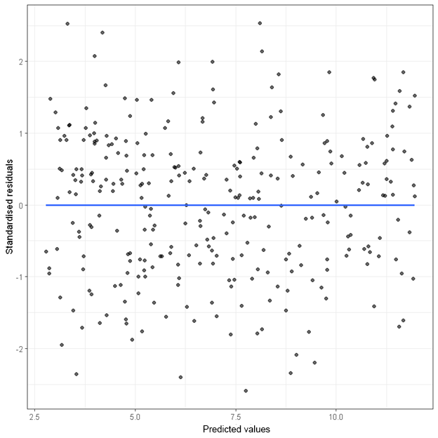
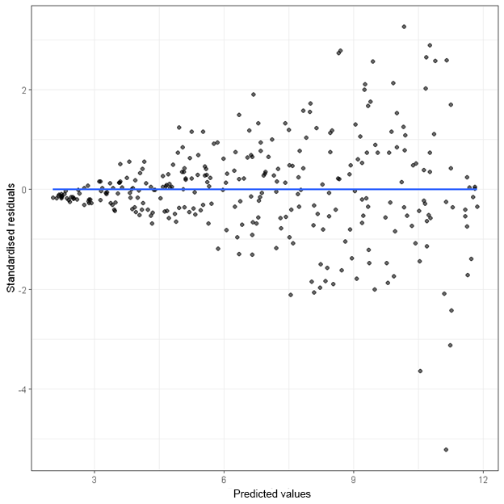
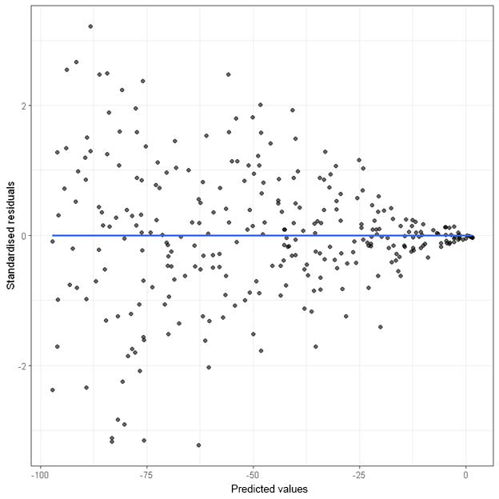
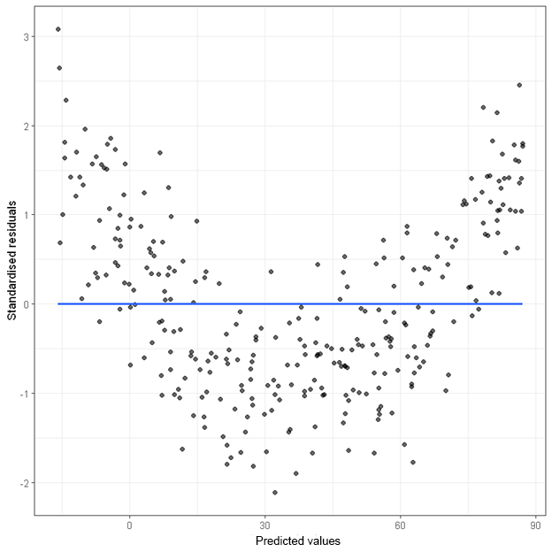

A residual plot is an essential tool for checking the assumption of linearity and homoscedasticity. The following are examples of residual plots when (1) the assumptions are met, (2) the homoscedasticity assumption is violated and (3) the linearity assumption is violated.
When both the assumption of linearity and homoscedasticity are met, the points in the residual plot (plotting standardised residuals against predicted values) will be randomly scattered.

When the homoscedasticity assumption is violated, the “spread” of the points across predicted values are not the same. The following are two plots that indicate a violation of this assumption.
In the first plot, the variance (i.e. spread) of the residuals increases as the predicted values increase.

In the second plot, the variance (i.e. spread) of the residuals decreases as the predicted values increase.

Heteroscedasticity usually does not cause bias in the model estimates (i.e. regression coefficients), but it reduces precision in the estimates. The standard errors are often underestimated, leading to incorrect p-values and inferences.
There is no bullet-proof way to fix heteroscedasticity. But there are two common solutions that may reduce the problem.
When the linearity assumption is violated, the points in the residual plot will not be randomly scattered. Instead, the points will often show some “curvature”.

There is no bullet-proof way to fix non-linearity. If there are multiple independent variables in a regression analysis, the first step is to identify the target independent variable that has a non-linear relationship with the dependent variable. The transgressing variable can usually be identified using the curvature test after a regression analysis. Once the transgressing variable is identified, its quadratic term (i.e. the squared term of the original variable) can be entered into the regression model.
Suppose the transgressing variable is x, its quadratic term can be created using the following line of code.
currentDataset$x_sq <- currentDataset$x^2
Quadratic term can also be created using StatsNotebook’s Compute menu.